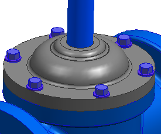
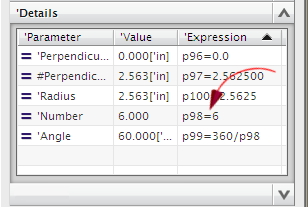

编辑阀轭圆形阵列
-
如果需要，开始建模应用模块。
-
将 des02_valve_yoke 设为工作部件。

-
在部件导航器中，选择圆形阵列 (25)。
 实例化的 简单孔(24)
实例化的 简单孔(24)
 圆形阵列 (25)
实例 [1] (25 )/ 简单孔 (24)
实例 [2] (25 )/ 简单孔 (24)
实例 [3] (25 )/ 简单孔 (24)
实例 [4] (25 )/ 简单孔 (24)
圆形阵列 (25)
实例 [1] (25 )/ 简单孔 (24)
实例 [2] (25 )/ 简单孔 (24)
实例 [3] (25 )/ 简单孔 (24)
实例 [4] (25 )/ 简单孔 (24)
-
展开细节面板。
-
将数量表达式从6更改为8。

圆形阵列和添加到特征实例的组件都更新了。

-
将 des02_valve_assm_2 设为工作部件。